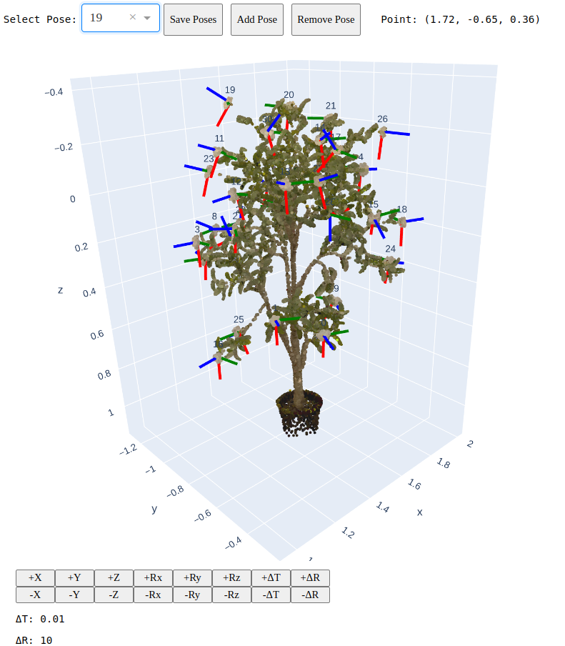

This study presents Flower Pose Estimation (FloPE), a real-time flower pose estimation framework for computationally constrained robotic pollination systems. Robotic pollination has been proposed to supplement natural pollination to ensure global food security due to the decreased population of natural pollinators. However, flower pose estimation for pollination is challenging due to natural variability, flower clusters, and high accuracy demands due to the flowers' fragility when pollinating. This method leverages 3D Gaussian Splatting to generate photorealistic synthetic datasets with precise pose annotations, enabling effective knowledge distillation from a high-capacity teacher model to a lightweight student model for efficient inference. The approach was evaluated on both single and multi-arm robotic platforms, achieving a mean pose estimation error of 0.6 cm and 19.14 degrees within a low computational cost. Our experiments validate the effectiveness of FloPE, achieving up to 78.75% pollination success rate and outperforming prior robotic pollination techniques.

@article{shrestha2025flope,
title={FloPE: Flower Pose Estimation for Precision Pollination},
author={Shrestha, Rashik and Rijal, Madhav and Smith, Trevor and Gu, Yu},
journal={arXiv preprint arXiv:2503.11692},
year={2025}
}{kind=link}